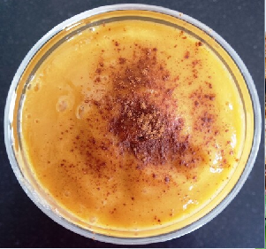

DULCE DE MANGO
PROCEDIMIENTO
1.-Licuar la pulpa con el azúcar, miel y leche hasta obtener una mezcla uniforme.
2.-Ponga a calentar la mezcla a fuego lento. Dejar hervir hasta que reduzca.
3.-Evitar que se pegue y se queme.
4.-Retirar del fuego y deje enfriar a temperatura ambiente

| CANTIDAD |
INGREDIENTES |
| 4 PZAS |
MANGO |
| 200 G |
AZUCAR REFINADA |
| 150 ML |
MIEL DE MAIZ |
| 1 LATA |
LECHE EVAPORADA |